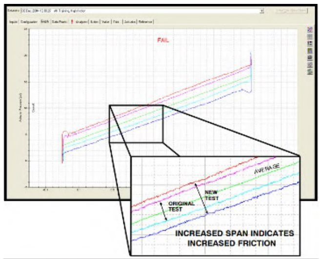

Diagnosing Rising Friction From a Signature Overlay

Overlay a new in-service signature on the original baseline in ValveLink — a visibly wider span between the two traces is what actually confirms rising friction and a real need for service, not a guess from symptoms alone.
After Control Valve Handbook, 6th ed., Fig. 2.9 — used directly. Component Index: cvh-cmp-signature-data-comparison-overlay.